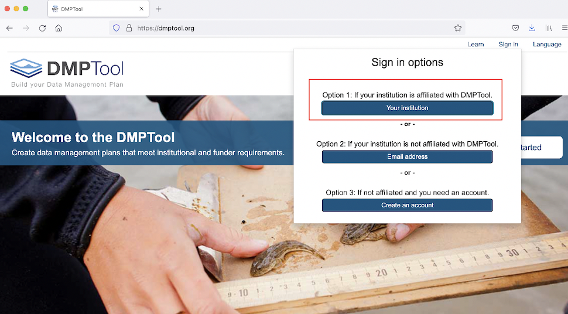
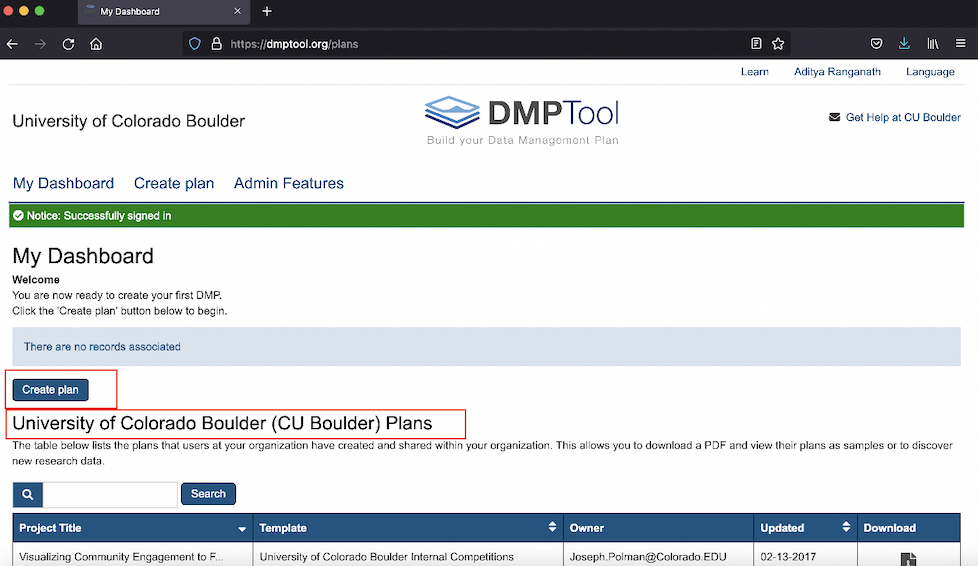
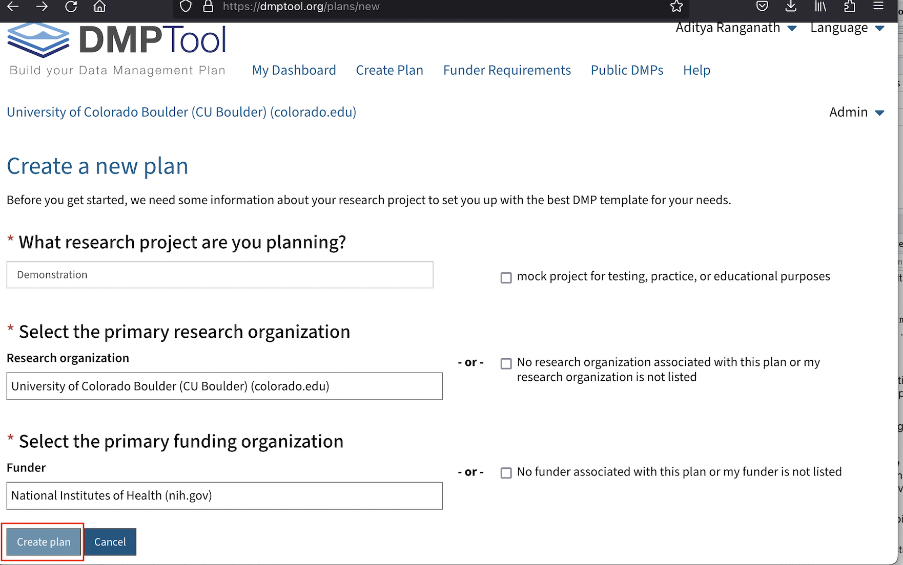
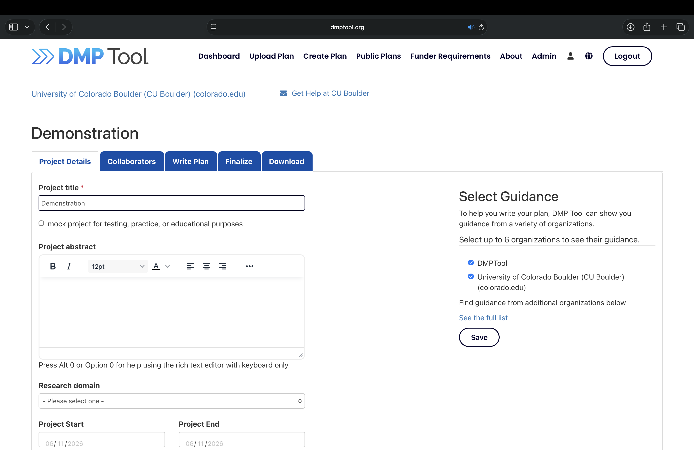

2 Data Management and Sharing (DMS) Plans
One of the main requirements of the NIH Data Management and Sharing Policy is that grant applicants complete a Data Management and Sharing (DMS) Plan. You can familiarize yourself with the new plan template on the NIH’s dedicated DMS Plan page, where you can download and review the template. For convenience, this template is also available for download here.
We also reproduce the questions from the template below. Note that many of the questions simply require a “yes/no” response.
Will there be maximum appropriate sharing of scientific data underlying peer-reviewed publications and other findings resulting from the work supported by this award (including preprints, refereed papers reported at conferences, and other findings)? Y/N
Will the scientific data underlying peer-reviewed publications be shared by the time of publication, or for other findings, by the end of the period of performance, which includes no-cost extensions? Y/N
Will shared scientific data be made available for at least as long as required by applicable data repository policies and/or journal policies? Y/N
If you answered “no” to elements 1, 2, or 3, or if you anticipate that sharing will be limited in some other way, please describe these limitations and the ethical, legal, or technical factors for them. Your response should specify a particular reason(s) for limiting sharing. [300 words maximum]
If scientific data derived from human research participants will be shared, will privacy, rights, and confidentiality of participants be protected as outlined in NOT-OD-22-213? Y/N
In the table below, please list [100 words maximum]
Key types of scientific data anticipated to be generated during the project, including the species and modality, if known (e.g., “human genomic data,” “rat functional magnetic resonance imaging data”). NIH recognizes that not all data types expected to be generated in the study will meet the definition of scientific data or can be anticipated in advance. If a data type does not appear on the list, it does not imply that that data type will not be shared if it is generated in the study.
The repository or an example of a repository where the scientific data may be managed and shared, if the scientific data is known at time of application. NIH expects the use of established repositories for preserving and sharing scientific data when they are available.
Expected Data Type Established Repository or Example 6a 6b For studies subject to the NIH Genomic Data Sharing Policy (GDS) (e.g., using NIH funds to generate large-scale human genomic data):
Will you share all large-scale human genomic and associated data in a NIH-designated repository according to the accelerated timelines expected in the GDS Policy? Yes/No/Not Applicable
Do you anticipate that when sharing you will be able to meet the expectations of the Institutional Certification in the GDS Policy? Yes/No/Not Applicable; if “no”, address in element 4
It is important to emphasize that when NIH refers to “sharing scientific data” in its DMS Plan template and policy documents, the expectation is that data will be published in a dedicated third-party data repository; it is generally not acceptable to self-host data, or indicate that it will be shared upon request. For additional general information about data repositories, and CU Scholar (our campus’s institutional repository), please see Section 4 below.
2.1 Using DMPTool to complete your NIH DMS Plan
You can also access the NIH DMS Plan template, and complete your Plan on DMPTool, which is a digital platform that provides structured assistance to researchers that would like to craft data management plans. DMPTool provides data management plan templates for a variety of major funders, including NIH. A particularly helpful feature of DMPTool is that it allows for easy collaboration among project teams, including among project teams that are dispersed across multiple institutions.
To get started with DMPTool, you can sign in using your CU credentials/Identikey:

Figure 2.1: Sign into DMPTool via your institution
Once you’ve signed in, you will arrive at a page displaying your DMPTool dashboard. To start a new plan, go ahead and click the blue “Create Plan” button:

Figure 2.2: Your personal DMPTool dashboard
Note that once you start working on a plan, you can save in-progress plans and return to them at your convenience; in-progress plans will show up on this dashboard.
After you have clicked the “Create Plan” button, you will arrive at an interface like the one below, where you can provide relevant details about your project, such as its name, the funding organization, and the plan template that you would like to use. In this example, we’ve named our project “Demonstration”, and have selected “National Institutes of Health” as the funding organization. Because there is only one NIH DMS Plan template, we do not need to explicitly select a template (as we would for a funding agency with multiple templates, such as the NSF); selecting “National Institutes of Health” as the funding organization will automatically load the NIH template once you select “Create plan”:

Figure 2.3: Initiate a new plan
At this point, we are on a page that looks something like the one below:

Figure 2.4: Environment to assemble plan
You can find the actual NIH DMS Plan template by clicking on the blue “Write Plan” tab, but you can also add relevant project details and information about collaborators by clicking on the corresponding tabs. Once you have filled out the sections in the Plan template, you can download a PDF copy of the Plan (which can be submitted as part of your grant application) within the blue “Download” tab.